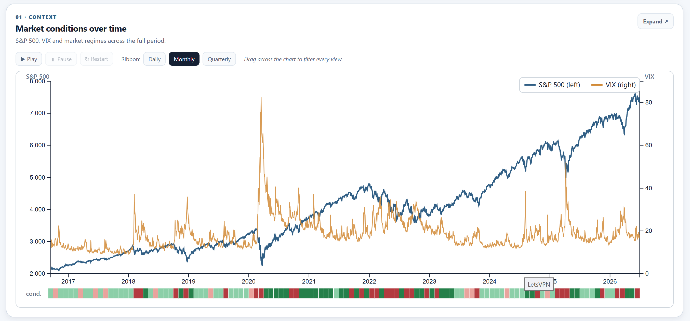
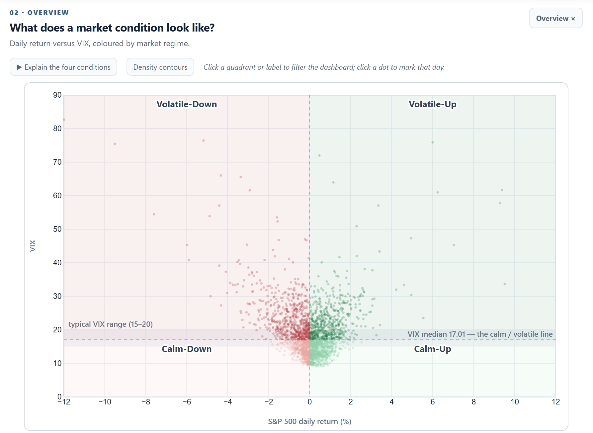
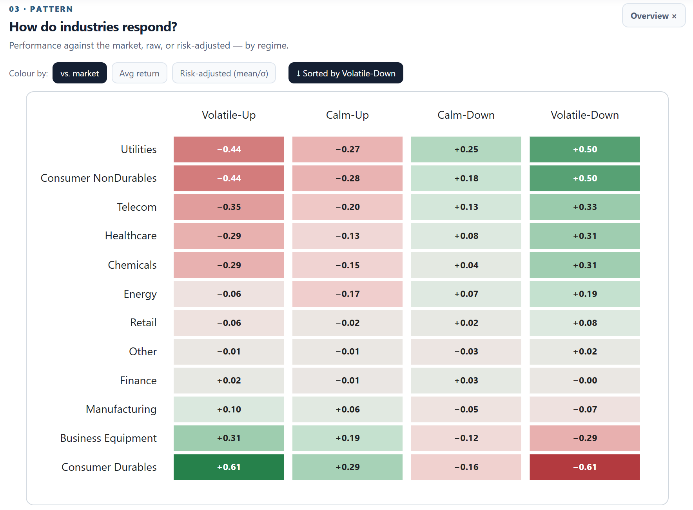
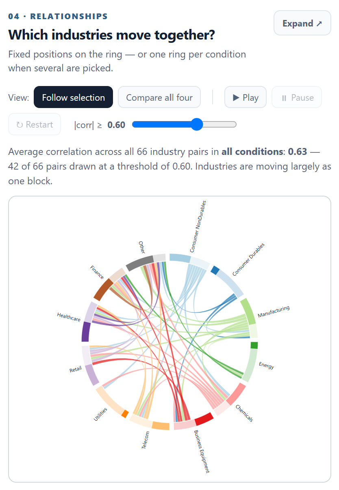
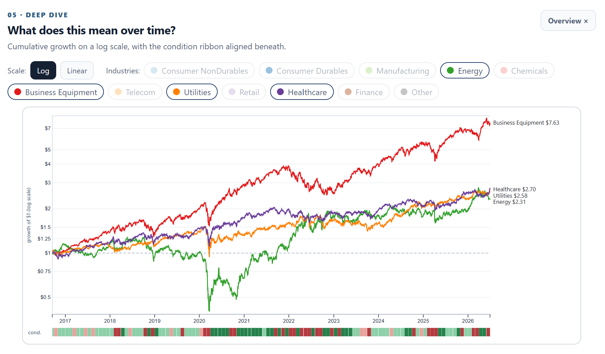

Exploring Industry Performance Across Market Conditions
An interactive exploration of how U.S. industries behave in rising, falling, calm, and volatile markets
1. Introduction
The U.S. stock market is often described as if it moves in one direction, but individual industries do not always respond in the same way. Healthcare, energy, utilities, finance, and other sectors face different economic pressures. Understanding these differences is useful for interpreting financial news and seeing why an overall market increase or decline does not describe every part of the economy.
Our main research question is: How does industry performance differ across U.S. stock market conditions? We explore five related questions: when conditions occurred, what distinguishes them, which industries performed relatively well or poorly, which industries moved similarly, and how selected industries changed over time. Our goal is not to predict stock prices or recommend investments. Instead, we make historical patterns easier to explore and compare.
The intended audience includes students and general readers with limited financial knowledge. We therefore use familiar charts, consistent colors, short explanations, and linked interactions. Rather than asking users to interpret one large financial table, we organize the experience from market context to industry-level detail.
2. Method
Data acquisition and preparation
We use three public datasets: daily S&P 500 index levels from the Federal Reserve Economic Data (FRED) series SP500; daily CBOE Volatility Index values from FRED series VIXCLS; and daily value-weighted returns for twelve industry portfolios from the Kenneth R. French Data Library. The analysis covers approximately ten years, from 2016 to 2026. These datasets provide complementary information about the direction of the broad market, expected volatility, and differences among industries.
We process the data in Python by standardizing dates, handling missing observations, restricting the study period, and aligning the datasets on common trading days. S&P 500 daily returns are calculated from consecutive index values. The twelve industry return series are organized in both long and grouped formats to support comparisons, filtering, and correlation calculations. Processed CSV and JSON files are loaded into the browser for visualization.
Market-condition definitions
We classify each trading day along two dimensions. Market direction is based on the sign of the S&P 500 daily return: up or down. Volatility is classified using whether the day's VIX is below or above the study-period median. Combining these dimensions produces four conditions: Calm-Up, Calm-Down, Volatile-Up, and Volatile-Down. VIX represents market expectations of future volatility, not the actual size of that day's price movement. The categories are descriptive groupings, not causal explanations.
Implementation and analysis
The dashboard uses JavaScript and D3.js to generate all five visualizations, with HTML and CSS for layout. Shared application state stores selected conditions, date ranges, dates, and industries. When users interact with one view, event handlers notify the other views. We calculate average industry returns and, for the heatmap, an additional excess return measure: an industry's daily return minus the S&P 500 return on the same day. This helps separate broad market direction from relative industry performance. Pearson correlations of industry returns support the relationship visualization; cumulative returns support comparisons over time.
3. Results and Interactive Visualizations
Visualization 1 — Market Conditions Timeline
The timeline combines S&P 500 levels and VIX values with a colored condition ribbon. It answers when different market environments occurred and gives context for changes across the decade. Users can hover for values, brush a date interval to filter the dashboard, and inspect the condition ribbon at different time resolutions. Playback controls provide another way to follow the historical sequence. This view establishes the time frame for the remaining charts.

Visualization 2 — Market Conditions Scatterplot
The scatterplot positions trading days by S&P 500 return and VIX, making the four conditions visible as regions of a two-dimensional space. It explains why a rising market can still be volatile and why falling prices do not necessarily imply high volatility. Users can inspect individual days, select conditions, and explore the distribution using density contours and guided animation. This view connects the category labels to the actual variables used to define them.

Visualization 3 — Industry Performance Heatmap
The heatmap directly addresses our main question by comparing twelve industries across four conditions. Rows represent industries, columns represent market environments, and cell colors encode performance. Users can switch between average return, excess return relative to the S&P 500, and a risk-adjusted measure, as well as sort and select industries. The excess-return view is especially important: because Up and Down categories are partly defined by market returns, raw averages can simply repeat the market direction. Relative performance reveals which industries held up better or lagged within the same environment.

Visualization 4 — Industry Relationship Chord Diagram
Our proposal originally planned a force-directed network, but the final design uses a chord diagram to compare industry relationships more consistently. Industries occupy fixed positions around a circle, and connections represent correlations between their daily returns. Users can change the correlation threshold and compare selected conditions. A fixed ordering reduces the difficulty of remembering where an industry moved between views. This visualization examines whether industries that appear different in average performance nevertheless tend to move together, and whether those relationships vary by market environment.

Visualization 5 — Interactive Industry Comparison
The final view follows selected industries' cumulative growth through time. Unlike the heatmap, which summarizes typical daily outcomes, this chart shows how gains and losses accumulate and how industry paths diverge. Users can choose industries, inspect values with a crosshair tooltip, and change the vertical scale. A logarithmic scale supports comparisons of proportional changes, while a condition ribbon links the growth paths back to the market environments established in the first view. Together, the five charts move from overview to classification, comparison, relationships, and long-term context.

Cross-view exploration. The dashboard supports date brushing, condition selection (including multiple conditions), industry selection, highlighting, metric changes, details on demand, and reset controls. These are not separate decorations: they let users investigate the same question from multiple perspectives without manually reconstructing filters in every chart.
4. Discussion and Design Evaluation
We designed the visualizations around complementary tasks. The timeline supports temporal overview and filtering; the scatterplot explains the classification; the heatmap supports direct comparison; the chord diagram shows relationships; and the cumulative chart provides historical detail. In terms of the What–Why–How framework, the data include temporal, numerical, and categorical attributes; the tasks include identifying, comparing, filtering, and exploring; and the encodings include position, color, connected marks, and linked selections.
A key strength is coordination. A date range selected on the timeline can carry into industry summaries and correlations, making comparisons more meaningful. Multi-condition selection allows side-by-side inspection rather than requiring users to remember one chart state while switching to another. We also provide a color-vision-friendlier palette because red and green alone can be difficult to distinguish. Explanatory text and a visible filter dock help users understand both the market terminology and their current selections.
There are limitations. Correlation measures co-movement, not causation; strong links do not mean one industry influences another. VIX is an imperfect summary of uncertainty, and dividing days at a single median threshold simplifies a continuous variable. Market conditions are also defined using daily observations, so they should not be interpreted as long economic regimes. Finally, historical average returns and cumulative paths are sensitive to the chosen date range and should not be treated as forecasts. Dense chord connections and small heatmap cells can still challenge readability, especially on narrow screens.
Possible improvements include user testing with non-finance participants, clearer annotations of unusual periods, additional measures of uncertainty, and alternative ways to compare industry relationships. A useful evaluation would ask participants to identify the strongest industry under a selected condition and explain how their answer changes after filtering dates, measuring accuracy, time, and confidence.
5. Conclusion
This project demonstrates why broad market movement is only part of the story. By combining market direction, expected volatility, and twelve industry return series, the dashboard allows users to explore when different conditions occurred, how industries performed relative to the market, and how industry relationships and cumulative paths differed. The main contribution is not a single ranking of “best” industries but an interactive way to investigate how answers depend on the market environment and selected period.
Our five linked views turn a complex financial dataset into a guided exploration for non-specialists. They also show why relative performance, correlation, and cumulative growth answer different questions. The dashboard is intended to support interpretation and further questioning rather than financial prediction.
6. Roles and Responsibilities
Kayra Seike Tanrikulu: data acquisition, cleaning, processing, and integration; D3.js development of the timeline and industry heatmap.
Emily Biaz: visualization, interaction, and interface design; D3.js development of the scatterplot, industry relationship view, and industry comparison chart.
Shared: linking the five visualizations, integration, testing and debugging, documentation, and presentation preparation. These responsibilities follow the original proposal and should be adjusted if the final division of work changed.
Data Sources
- Federal Reserve Economic Data (FRED), S&P 500: fred.stlouisfed.org/series/SP500
- Federal Reserve Economic Data (FRED), CBOE Volatility Index (VIX): fred.stlouisfed.org/series/VIXCLS
- Kenneth R. French Data Library, 12 Industry Portfolios: mba.tuck.dartmouth.edu/pages/faculty/ken.french/data_library.html
STATS 401 · Final Group Project · Exploring Industry Performance Across Market Conditions